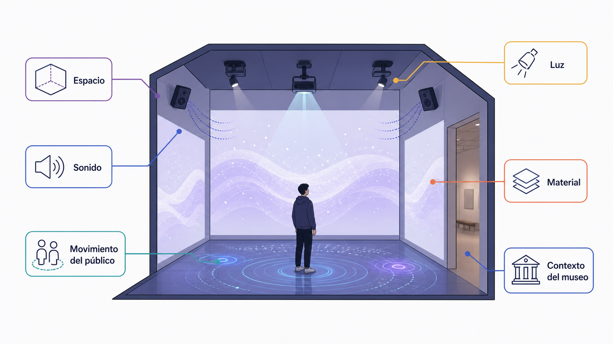
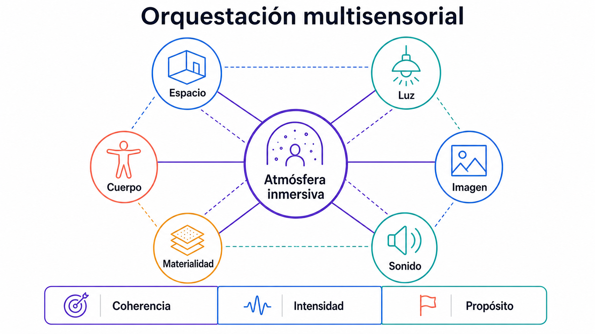
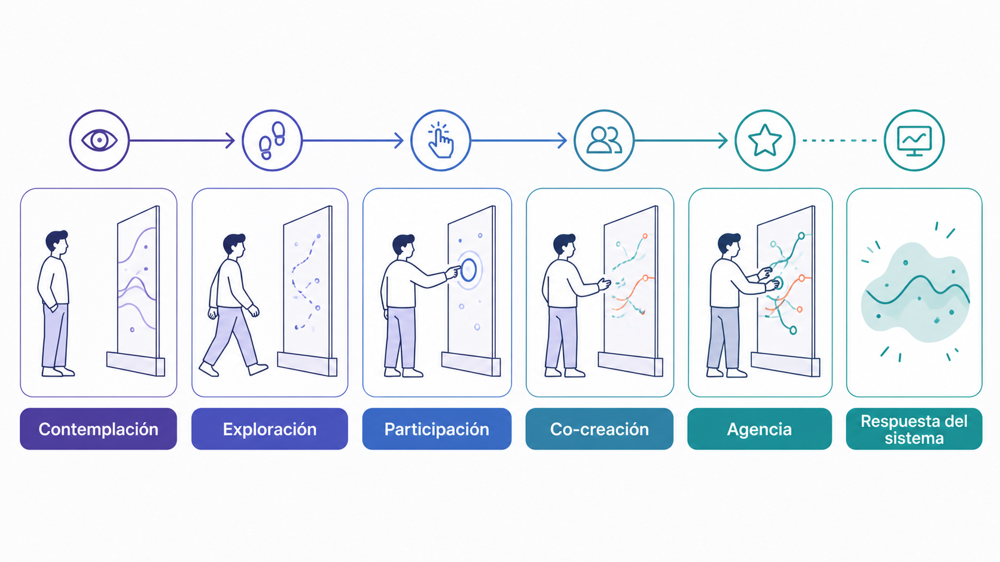

Instalación, mapping, multisensorialidad, participación del espectador y el papel del museo en la cultura inmersiva.
Objetivos de aprendizaje
Reconocer prácticas artísticas contemporáneas que producen inmersión sin necesidad de HMD.
Analizar el papel del espectador como agente, no como receptor pasivo.
Comprender el rol del espacio físico, el site-specific y el museo como dispositivo.
Conceptos clave
Instalación inmersivaInstalación interactivaProjection mappingMultisensorialidadParticipación del públicoSite-specificMuseografía contemporánea
Introducción
Esta clase se centra en el arte inmersivo contemporáneo y en las formas en que una experiencia puede envolver al espectador sin depender necesariamente de un casco de realidad virtual. Muchas prácticas artísticas trabajan con el cuerpo, el espacio, la arquitectura, la luz, el sonido, la materia y la participación del público: la inmersión no se produce solo por ver una obra, sino por entrar en una situación espacial. Se abordan conceptos como instalación inmersiva, instalación interactiva, projection mapping, multisensorialidad, site-specific, participación del público y museografía contemporánea, así como el papel del museo y el centro cultural como dispositivos.
Conceptos en detalle
Instalación inmersiva
Obra que transforma un espacio para envolver al espectador. No se limita a un objeto aislado, sino que construye un entorno. No siempre es interactiva: a veces el espectador solo recorre, contempla o permanece dentro del ambiente.
Luz
Sonido
Proyección
Escala arquitectónica
Materiales físicos
Niebla, agua, reflejos o sombras
Recorrido espacial
Disposición del público
Instalación interactiva
Instalación que añade respuesta del sistema a la presencia o acción del público. El espectador deja de ser solo observador y se convierte en parte del funcionamiento de la obra.
Activar sonidos
Modificar imágenes
Alterar luces
Cambiar el comportamiento de objetos
Influir en una proyección
Ser detectado por sensores
Transformar el entorno con su movimiento
Projection mapping
Técnica que consiste en proyectar imágenes sobre superficies reales (arquitectónicas u objetuales) adaptando la proyección a la forma del soporte. No solo decora: puede resignificar la superficie, modificar la percepción de su escala o convertirla en una narrativa visual.
Fachadas
Esculturas
Salas
Objetos
Escenarios
Superficies irregulares
Multisensorialidad
Aparece cuando la experiencia implica varios sentidos, no solo la vista. Cuantos más sentidos intervienen, más densa puede ser la experiencia; pero la multisensorialidad debe estar al servicio de una intención, no añadir estímulos sin criterio.
Sonido
Luz
Temperatura
Vibración
Olor
Viento
Agua
Textura
Movimiento corporal
Oscuridad o niebla
Participación del público
Implicación activa del espectador, que puede darse en distintos niveles. No toda participación implica verdadera agencia: a veces el público solo activa efectos predefinidos sin modificar realmente la experiencia.
Presencia física: estar dentro del espacio
Recorrido: decidir por dónde moverse
Activación: desencadenar eventos
Transformación: modificar el estado de la obra
Co-creación: la obra se produce parcialmente con la acción del público
Participación social: la experiencia depende de varias personas
Site-specific
Obra pensada para un lugar concreto. El espacio no es un contenedor neutro, sino parte del significado de la obra. Si se traslada, cambia su sentido.
La arquitectura
La historia del lugar
La luz natural
El recorrido del público
Las condiciones sonoras
La memoria cultural del espacio
La institución que la acoge
Museografía contemporánea
Estudia cómo se presentan las obras, objetos o experiencias dentro de un espacio expositivo. Diseñar una experiencia inmersiva implica también pensar cómo será mostrada, recorrida, explicada y cuidada dentro de una institución.
Accesibilidad
Aforo
Tiempo de permanencia
Circulación del público
Señalética
Seguridad
Mantenimiento técnico
Mediación educativa
Documentación de la experiencia
Relación entre obra y espectador
Del objeto al entorno
En muchas prácticas artísticas tradicionales, el espectador se sitúa frente a un objeto: un cuadro, una escultura, una pantalla o una imagen. En el arte inmersivo contemporáneo esta relación cambia: el espectador no está solo delante de la obra, sino dentro de ella.
La obra puede convertirse en una sala, un ambiente, un recorrido, una arquitectura temporal, una situación participativa o un sistema sensible a la presencia del público.
Esto modifica la pregunta principal del diseño. Ya no basta con preguntar qué ve el espectador; también hay que preguntar dónde está, qué puede hacer, qué siente corporalmente, cómo se mueve y cómo cambia el espacio con su presencia.

Figura 1.3 — Capas espaciales y sensoriales de una instalación inmersiva.
El cuerpo como punto de partida
El arte inmersivo trabaja con el cuerpo del espectador. Incluso cuando no hay interacción digital, el cuerpo está implicado porque debe entrar, caminar, esperar, mirar alrededor, escuchar, tocar o compartir el espacio con otros.
El cuerpo participa mediante escala, proximidad, movimiento, orientación, respiración, tiempo de permanencia, relación con otras personas y sensación térmica, sonora o lumínica. En una instalación inmersiva, el cuerpo no es un accesorio: es el medio a través del cual la experiencia ocurre.
Atmósfera e inmersión
Muchas obras inmersivas no se basan en una narración tradicional, sino en la construcción de una atmósfera. Una atmósfera puede surgir de la luz, el color, la densidad del sonido, la escala del espacio, la repetición de elementos, la niebla, el ritmo, la temperatura, la presencia de otros cuerpos o la relación entre vacío y saturación.
Una atmósfera inmersiva no cuenta necesariamente una historia lineal, pero puede generar una experiencia emocional, perceptiva o crítica.

Figura 1.6 — Componentes coordinados de una atmósfera inmersiva multisensorial.
Contemplación e interacción
No toda obra inmersiva es interactiva. Una experiencia contemplativa envuelve al espectador en un entorno que no modifica significativamente: una sala de luz, niebla y sonido; una proyección arquitectónica; un entorno sonoro cuya experiencia depende de la posición del cuerpo.
Una experiencia interactiva permite activar o modificar la obra mediante presencia, movimiento o acción: una instalación que responde al movimiento, una sala donde las proyecciones cambian al tocar superficies, una obra con sensores que transforman luz y sonido según la posición.
La interacción no siempre mejora una obra. A veces una experiencia contemplativa puede ser más potente que una interacción superficial. Lo importante es que la estrategia sea coherente con la intención.

Figura 1.4 — Continuo de participación y agencia del espectador.
El museo como dispositivo
El museo o centro cultural no es un espacio neutral: condiciona el acceso (quién puede entrar, coste, accesibilidad), el tiempo (duración, turnos, repetición), la percepción (vecindad de otras obras, textos, mediación, ruido) y la técnica (presupuesto, mantenimiento, sensores, aforo).
Diseñar una experiencia inmersiva implica también diseñar su contexto de exhibición.
Tipologías
Envolvimiento espacial
La obra rodea al espectador física o perceptivamente.
Proyecciones en varias paredes
Sonido envolvente
Superficies reflectantes
Arquitecturas temporales
Oscuridad
Luz direccional
Elementos suspendidos
Preguntas de análisis
¿El espectador mira la obra desde fuera o se encuentra dentro de ella?
Transformación perceptiva del espacio
La obra modifica cómo percibimos un lugar.
Profundidad
Escala
Color
Sonido
Densidad
Orientación
Gravedad aparente
Límites del espacio
Preguntas de análisis
¿La obra transforma el espacio o solo ocupa el espacio?
Interacción ambiental
La obra responde a la presencia o acción del público, pero no necesariamente mediante una interfaz visible.
La lluvia se detiene alrededor del espectador
La luz cambia cuando alguien entra
El sonido se desplaza según la posición del cuerpo
Una proyección reacciona al movimiento
Preguntas de análisis
¿El espectador entiende que está modificando la obra?
Participación colectiva
La experiencia se modifica por la presencia de varias personas.
Coreografías espontáneas
Comportamientos sociales
Colaboración
Saturación
Espera
Observación mutua
Conciencia de grupo
Preguntas de análisis
¿La presencia de otros espectadores refuerza o debilita la inmersión?
Espectacularidad y crítica
El arte inmersivo se mueve entre dos polos: el espectáculo (impacto sensorial, viralidad, consumo rápido) y la obra crítica (cuestionar una situación, hacer visible un problema, modificar la posición del espectador). Pueden coexistir, pero no son equivalentes.
Espectáculo: impacto sensorial, atracción visual, fotografía y consumo rápido
Obra crítica: cuestionamiento, visibilización, distancia reflexiva
Preguntas de análisis
¿La obra usa la inmersión para generar pensamiento o solo para producir impacto?
Referentes
teamLab — Borderless
Las instalaciones de teamLab trabajan con proyecciones digitales, movimiento, sonido, entornos oscuros y continuidad entre salas. El espectador no observa una obra aislada, sino que atraviesa un sistema visual cambiante.
¿El público transforma realmente la obra o solo activa variaciones?
¿La experiencia funciona como obra crítica o como espectáculo?
¿Qué papel tiene la escala del espacio?
¿Cómo se guía al visitante entre salas?
¿Qué podría adaptarse a una escena Unity sencilla?
Random International — Rain Room
Rain Room propone una situación muy clara: el público atraviesa un espacio donde cae lluvia, pero el sistema detecta su presencia y evita que se moje. La obra convierte una acción corporal simple —caminar— en una experiencia de control, vulnerabilidad y sorpresa.
¿Qué versión simplificada podría prototiparse en Unity?
Olafur Eliasson — The Weather Project
The Weather Project transforma una sala de museo mediante luz, niebla y escala. La experiencia no depende de interacción digital compleja, sino de la atmósfera y del comportamiento colectivo del público.
Elegir una instalación inmersiva contemporánea (teamLab, Random International, Olafur Eliasson u otro artista o colectivo) y completar una ficha de análisis.
Título, autor/colectivo, año y lugar de presentación
Tipo de obra: instalación inmersiva / interactiva / mapping / multisensorial
Descripción breve
Estrategias espaciales: cómo se organiza el espacio
Estrategias visuales: luz, imagen, color, proyección o escala
Estrategias sonoras: papel del sonido
Participación del público: qué hace el espectador
Nivel de interacción: contemplativa / reactiva / interactiva / participativa
Comentario crítico: qué funciona mejor y qué podría ser problemático
Actividades de ampliación opcional · fuera de la sesión
Visita virtual a un centro cultural
Ampliación opcional · 20 min · Investigación online
Visitar la web de un centro cultural, museo o institución que programe arte, tecnología o cultura digital (CCCB, ZKM, Ars Electronica, La Casa Encendida, Barbican, Tate Modern, Centre Pompidou, MUTEK, Medialab, Matadero Madrid…). Seleccionar dos piezas inmersivas y comparar institución, tipo de inmersión, tecnologías, rol del público, espacio y crítica personal.
¿Qué tipo de piezas inmersivas programa la institución?
¿Predomina la instalación, el mapping, la VR, el sonido o la performance?
¿Cómo se presenta la obra al público?
¿Hay documentación visual suficiente?
¿La institución explica la tecnología usada?
¿Qué pieza parece más interesante para inspirar un proyecto Unity?
Contemplación vs interacción
Ampliación opcional · 20 min · Comparación crítica
Comparar dos obras inmersivas: una principalmente contemplativa y otra claramente interactiva.
¿Qué hace el espectador en cada una?
¿En cuál hay más agencia?
¿En cuál hay más presencia?
¿La interacción mejora necesariamente la experiencia?
¿Cuál resulta más potente y por qué?
¿Cuál sería más fácil de prototipar en Unity?
Estrategias espaciales
Ampliación opcional · 20 min · Análisis visual
Elegir una obra inmersiva y esquematizar su espacio mediante un dibujo o diagrama, indicando los elementos principales del recorrido.
Entrada
Salida
Zona principal
Recorrido del público
Punto de atención
Fuentes de luz
Fuentes de sonido
Zonas interactivas
Zonas de espera o contemplación
¿El recorrido es libre o dirigido?
¿Dónde se concentra la atención?
¿El público se mueve o permanece quieto?
¿Hay zonas de transición?
¿Cómo se podría traducir este espacio a una escena Unity?
Investigación aplicada
Ampliación opcional · fuera de la sesión
Analizar una obra o exposición inmersiva en profundidad y documentar el análisis en el cuaderno de trabajo con capturas, fuentes y comentario crítico personal. Útil como preparación para Tarea 1 y Tarea 2.
¿Cuál es el rol del espectador?
¿Qué tecnologías se emplean?
¿Qué estrategias espaciales se utilizan?
¿Qué papel tienen luz y sonido?
¿La experiencia es contemplativa o interactiva?
¿Qué tipo de inmersión predomina?
Conexión con Unity
Elegir una instalación inmersiva y proponer cómo se podría traducir a una escena básica de Unity, como puente con el Laboratorio 2 y el Laboratorio 3.